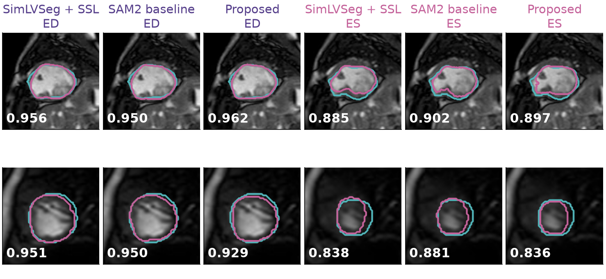

Cardiac segmentation
single ventricle
single ventricle

ISMRM 2027 · submitted
SV-MRSeg: detector-prompted SAM2 for label-efficient segmentation of single-ventricle cine CMR
SAM2 · YOLO · congenital heart disease
Patients with single-ventricle physiology need surgical palliation and lifelong cardiac MRI, and their anatomy varies too much for networks trained on biventricular hearts. Contouring cine images by hand is slow, and usually only the end-diastolic and end-systolic frames get traced. SV-MRSeg carries SimLVSeg's sparse-label training over to cine CMR, swaps its 3D U-Net for the SAM2 foundation-model encoder, and prompts SAM2 with boxes from a YOLO detector so segmentation runs fully automatically.